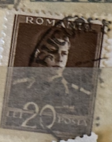
| SOURCE | TITLE| IMAGE MATCH | click to source page |
| pvoller.net | WW2 Postal History and More | 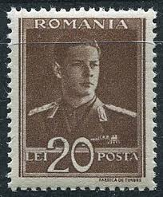 |
| eBay | ROMANIA STAMP 1944-1945 King Michael I 50L (KBX) | eBay | 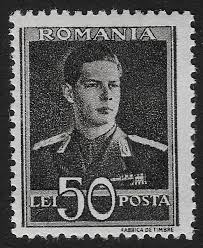 |
| eBay | ROMANIA STAMP 1944-1945 King Michael I 3.5L (KBX) | eBay | 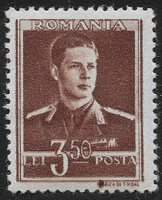 |
| eBay UK | ROMANIA STAMP 1944-1945 King Michael I 4.5L (KBX) | eBay UK | 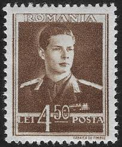 |
| Mercari | 1944 Romania (No.819) New | Mercari | 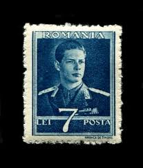 |
| allnumis.com | 20 Lei - King Mihai I, 1940 - Romania - Stamp - 30263 | 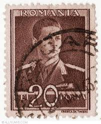 |
| ebid.net | Gibraltar Mi 1600/5 PP: Centenary of the Outbreak of the Great War on eBid Europe | 220059568 | 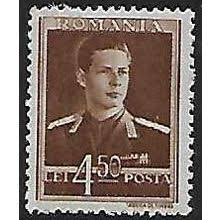 |
| GetArchive | Danzig Gregor Mendel 10 Pf 1939 - PICRYL - Public Domain Media Search Engine Public Domain Image | 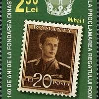 |
| allnumis.com | 1 Leu - King Mihai I, 1940 - Romania - Stamp - 23145 | 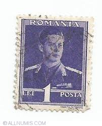 |
| Mercari | 1944 Romania (No.822) New | Mercari | 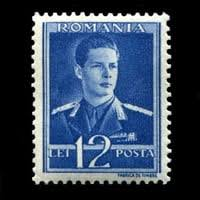 |
| eBay | ROMANIA STAMP 1944-1945 King Michael I 7L (KBX) | eBay | 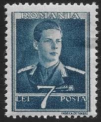 |
| Wikipedia | קובץ:Stamps of Romania, 2006-045.jpg – ויקיפדיה | 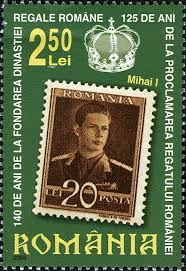 |
| eBay | ROMANIA STAMP 1944-1945 King Michael I 5L (KBX) | eBay | 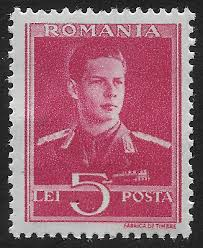 |
| eBay | ROMANIA STAMP 1944-1945 King Michael I 11L (KBX) | eBay | 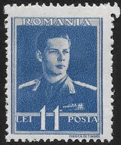 |
| eBay | ROMANIA STAMP 1944-1945 King Michael I 2L (KBX) | eBay | 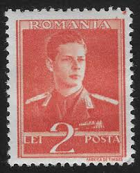 |
| romaniastamps.com | MINISTRY OF FINANCE 1940 | 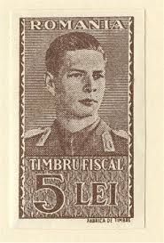 |
| eBay | 1940/1942 King Michael,Aviation Fund,Romania,Mi.676=8+1 LEI/x4,Variety ERROR/MNH | eBay | 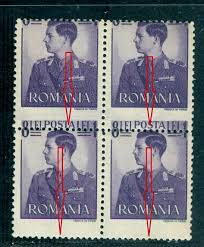 |
| eBay | Romania 1940 1942, Mi#666-679, Sc#B138-B144A, King Michael I, surcharge, MNH! | eBay | 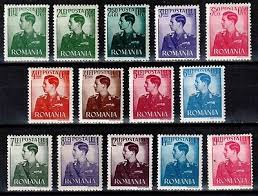 |
| eBay | Romania 1945 #BB290-91 Agriculture and Industry United & King Michael - MH | eBay | 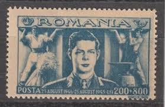 |
| eBay | ROMANIA ERROR - VARIETY KING MIHAI I VAL 11 L ULTRAMARINE MNH | eBay | 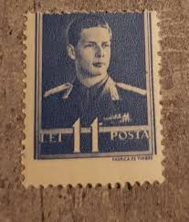 |
| eBay | Romania 1940 Sc# 507/11 King Mikhael blocks 4 MNH | eBay | 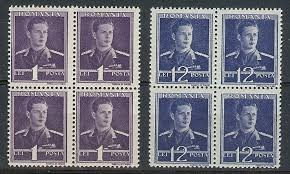 |
| eBay | ROMANIA OLD STAMPS 1930 King Carol II - Mint Hinged | eBay | 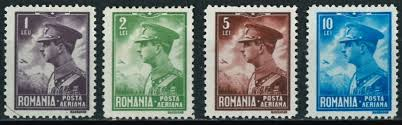 |
| eBay | ROMANIA WW2 3rd REICH GERMAN PUPPET STATE 1940 B138-B144 KING MICHAEL PERFECT NH | eBay | 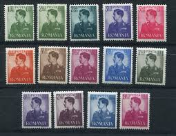 |
| eBay | 1944 King Michael/Mihai,Definitives,Romania,807=7 LEI/x3,Print Variety ERROR,MNH | eBay | 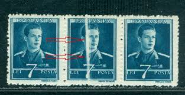 |
| Etsy | Italy 1930 Royal Wedding Set of Three Postage Stamps Mint Never Hinged - Etsy | 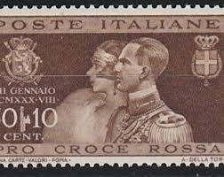 |
| romaniastamps.com | 40 | 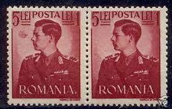 |
| eBay | Romania #B146-B147 Civil War Heroes Semi-Postal Stamps Europe 1941 Mint NH | eBay | 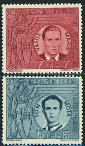 |
| eBay | Romania 1930 - MNH stamps. Mi Nr.: 389/392.................... (EB) MV-15819 | eBay | 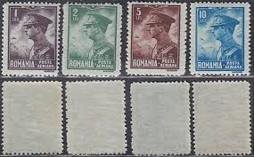 |
| eBay | Eritrea Scott 150 Used VF block (Catalog Value $26.00) | eBay | 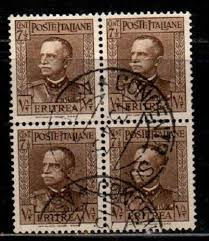 |
| eBay | ROMANIA 1934 KING CHARLES II used @ y | eBay | 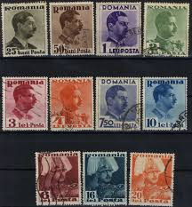 |
| eBay | Romania STAMPS 1934 KING Carol II POSTAL HISTORY USED ERROR | eBay | 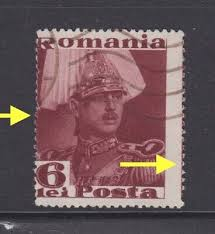 |
| eBay | Romania 1951, Filimon Sirbu, communist hero, block, first day, RARE | eBay | 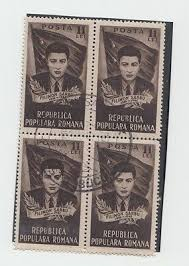 |
| eBay | Romania 1941, Mi#682-683, Sc#B146-B147, Marin & Mota, Iron Guard, MNH! | eBay | 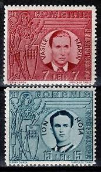 |
| eBay | Romania 1947 King Michael 20 LEI Definitives Oil Wells VFU ERROR | eBay | 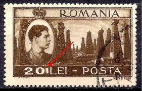 |
| eBay | Romania 1930, Mi#389-392, Sc#C13-C16, King Carol II, aviator, airplane, MNH! | eBay | 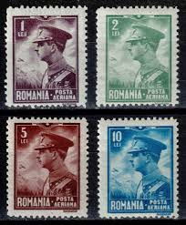 |
| eBay | Romania STAMPS 1934 KING Carol II POSTAL HISTORY USED ERROR 6 LEI | eBay | 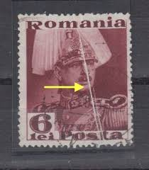 |
| eBay | 1938 KGVI blocks of 4, SG603-608, 609/Scott 226-228c MNH, CV £248 (a226 | eBay | 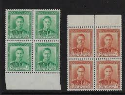 |
| eBay | Romania 1947 MNH Mi 1077 Sc B368 Balkan Games of 1947, Bucharest.King Michael ** | eBay | 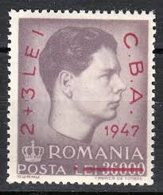 |
| eBay | Romania STAMPS 1935 KING Carol II POSTAL HISTORY ERROR UNUSED BLOCK POST | eBay | 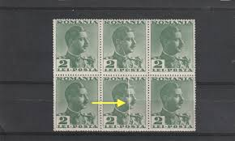 |
| eBay | British Virgin Islands Scott #78a SG #112 Mint Hinged Chalky Paper | eBay | 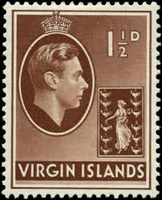 |
| Todocolección | rumania - romania - r. p. romina - republica po - Buy Antique stamps of Romania on todocoleccion | 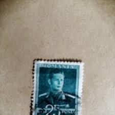 |
| The Philately | Romania 1958 Mi 1734-1737 Day of Armed Forces Sc 1237-1239, C55 for sale at The Philately | 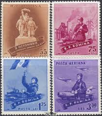 |
| eBay | Belgium Postage Stamp Scott 449a, Mint Never Hinged!! B1086 | eBay | 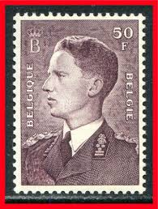 |
| Free stamp catalogue | Stamp 1946, Romania Red Cross overprints 7v, 1946 - Collecting Stamps - Freestampcatalogue.com - The free online stampcatalogue with over 500.000 stamps listed. | 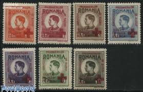 |
| eBay | UOES R. P. Romina Romania Used Stamp Set mix Used Old Franked vintage Europe | eBay | 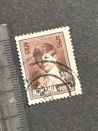 |
| eBay | Belgium Stamp Scott #168, 5fr, Brown Violet, Used, On Paper, SCV$15 (A) | eBay | 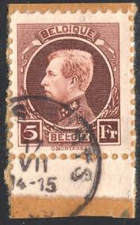 |
| eBay | Romania Scott #1033 Mint Never Hinged | eBay | 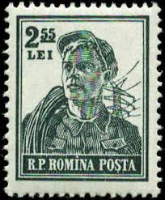 |
| eBay | Over Giuba Effigy Vittorio Emanuele III 1 Lira New Complete Rubber MNH | eBay | 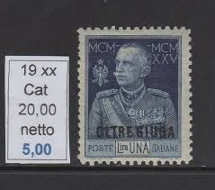 |
| eBay | Romania 2 Romanian Postage Stamps, Posta Romana, Hinged | eBay | 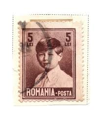 |
| eBay | Romania 1930 Mi 389-2 MH CV 42 euro SKU 1056 | eBay | |
| eBay | NEW ZEALAND 1953-54 QE 11 2/6 & 10/- BARGAIN MINT DUO (JF/HM) | eBay | |
| eBay | Belgium 10f Stamp - 1930s Poortman - Brussels Cancel (Used Hinged) X22 | eBay | |
| eBay | ITALY Kingdom 1925-6 Jubileum Vitt. Emanuele III MNH-VF # Sass. 189-91 | eBay | |
| eBay | NEW ZEALAND 1953 Queen on Horseback 5/- MNH - ACS cat NZ$60................A7099 | eBay | |
| eBay | ROMANIA 31 MINT HINGED OG* NO FAULTS VERY FINE! | eBay | |
| eBay | Romania Airmail Stamps. Scott's C13....C16.MH. King Carol II sal's stamp store. | eBay | |
| eBay | Romania STAMPS KING MICHAEL ROYAL PAIR ERROR MNH POST MIHAI 1 LEU | eBay | |
| eBay | ROMANIA 10 Lei POSTA KING MIHAI MICHAEL 1940-1942 BROWN used - | eBay | |
| eBay | Italy Cirenaica n.26 - cv 2900$ old signature - Giubileo perf. 131/2 - | eBay | |
| eBay | GB 1937 Sc# 234 Coronation George Queen Elizabeth block 4 MNH | eBay |
{kind=link}